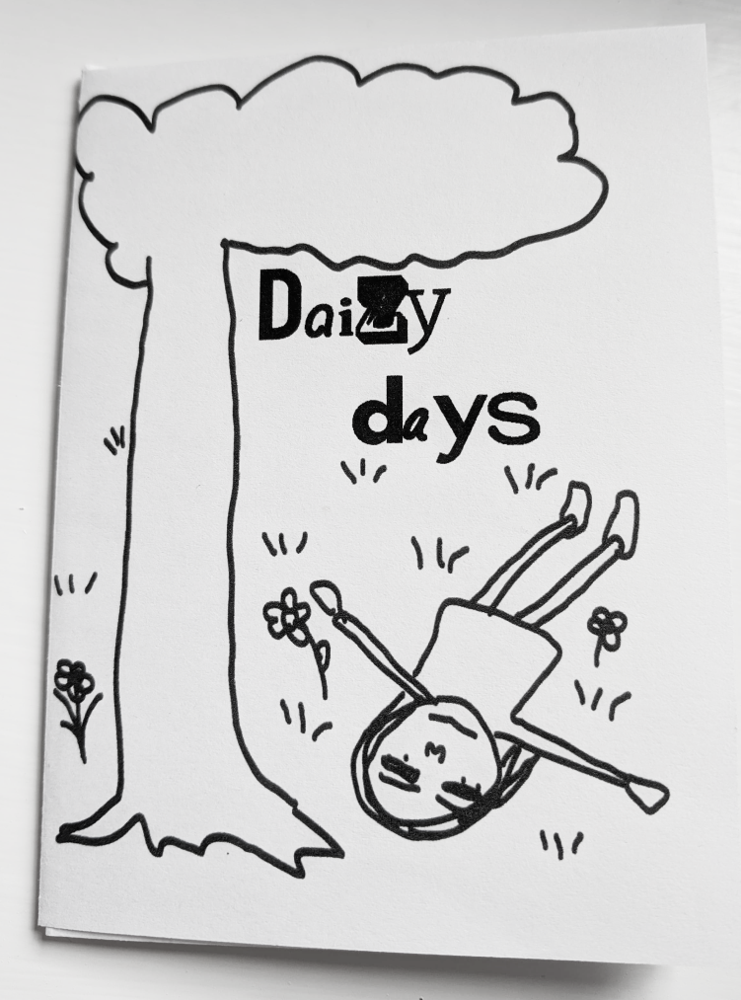

- Thank you zine
- size: 15 x 16 cm
- Line drawings upon riso prints inspired by cmyk printing.


- Nature protest newspaper zine
- size: A5.
- A selection of photographs recording an art instalation ammong nature.

- Daizy days
- size: A7
- Childrens zine, illustrated with characters connecting with nature.

- Victoria line zine
- size: A7
- Photographic documentation of a journey during the self isolation period.

- Streetscapes zine
- size: A7
- Fanzine of poetry, some writen by Brazilian idols of poetry.

- Walking metamorphosis zine
- size: A7
- llustrations in front of collages reflecting on human nature.